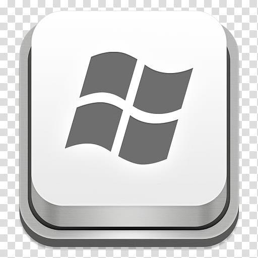

Tema 5. Explorador de Windows
Para comprender este tema, es fácil relacionarlo con una escuela u oficina, donde se acostumbra organizar todo en carpetas o cajas, con la finalidad de tener un orden y encontrar la información más rápido. Dichas carpetas o cajas se guardan dentro de un archivero o un clóset.
Lo mismo ocurre con la computadora, donde podemos trabajar e ir guardando nuestra información, y para encontrarla rápido hay que organizarla también en carpetas; pueden ser nuestros archivos del negocio, el trabajo, la escuela; y lo mejor de esto es que no ocupan un espacio físico, todo está dentro del disco duro o unidad de almacenamiento de la computadora.
Pero...
¿Siempre recuerda cómo se llama el archivo que generó?
Pues resulta que ahora necesita actualizar esta información.
Regresemos al ejemplo del clóset ¿Qué haría?
Si en su clóset quiere buscar algo y no sabe dónde lo guardó, seguramente le sería de mucha utilidad lo siguiente:
- Tener una lista de los objetos que hay en su clóset.
- Acordarse del color de la caja o bolsa donde dejó el objeto que ahora busca.
- Tener el clóset ordenado por tipo de objetos u orden alfabético.
¡Esto sí lo puede hacer su computadora!, y es precisamente la utilería "Explorador de Windows" (Windows Explorer) la que nos ayuda a encontrar la información de una manera muy rápida.
Esta es una herramienta muy útil que permite tener una visión general de lo que se encuentra almacenado en cada uno de los directorios y carpetas del disco duro de nuestra computadora.
Al abrir una carpeta con más archivos, se abre una ventana y dentro de ésta podemos encontrar el Explorador Windows.
Otra forma de entrar al Explorador, además de oprimiendo la tecla Windows  + la tecla E, es la siguiente:
- Haga clic izquierdo el Menú Inicio (Start).


- Seleccione Todos los programas (All Programs)
- Busque la sección Accesorios (Accessories), se encuentra en la parte superior de la barra.
- Haga clic izquierdo en el Explorador de Windows (Windows Explorer).
- Se abrirá una ventana similar a ésta: